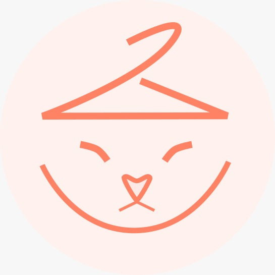

El Armario del Michi
Nos vemos en la tienda
Abre el mapa para encontrarnos.
Urban Look
Calle de Armenta y López 509-A
OAX_RE_BENITO JUAREZ, Centro
68000 Oaxaca de Juárez, Oax.
Abrir en Google Maps
Abrir en Apple Maps
OAX_RE_BENITO JUAREZ, Centro
68000 Oaxaca de Juárez, Oax.